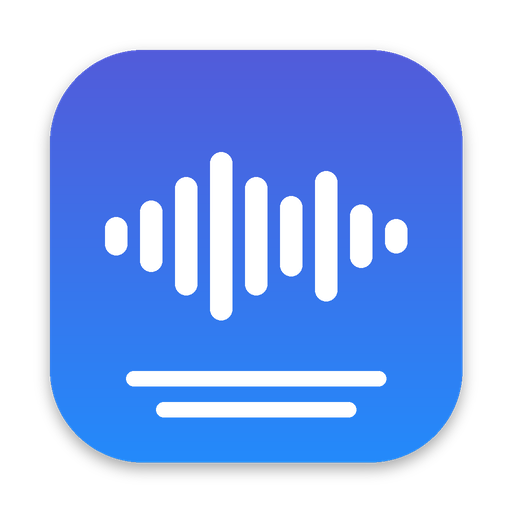

Transkribera svenska intervjuer på din Mac. Ljudet lämnar aldrig datorn.
Släpp in en ljud- eller videofil och få text med talare och tidskoder, gjord helt lokalt med modeller tränade på svenska. Du kan också spela in möten direkt i appen. Gratis och öppen källkod.

Byggd för intervjuer och möten på svenska
För dig som spelar in intervjuer, samtal eller möten och behöver en text att läsa, citera eller analysera, utan att skicka inspelningen till en molntjänst.
-
Rätt modell för jobbet
Pianissimo från Klang är förstavalet för svenska och snabbast. KB Large ordagrann från Kungliga biblioteket tar du när varje ord måste stämma, som citat, namn och facktermer. Large v3 Turbo för andra språk.
-
Vem sa vad
Appen skiljer på talarna, och du kan ge dem roller som Intervjuare och Kund. Osäkra talarbyten markeras med ⚠ så att du vet var du ska lyssna.
-
Spela in möten
Spela in ett digitalt möte, t.ex. i Teams eller Google Meet, direkt i appen: datorns ljud och, från macOS 15, även din mikrofon. Texten kommer när du stoppar. Berätta för deltagarna att du spelar in.
-
Lyssna och rätta
Klicka på en mening så spelas den upp. Redigera texten direkt och sök i den.
-
Anonymisering
Namn, platser, personnummer, telefonnummer med mera byts mot t.ex. [PERSON 1] när du kopierar och exporterar. Originalet sparas lokalt.
-
Export för analys
En Markdown-fil per intervju, ett stycke per talarbyte med tidskod, redo att tematisera. Även text, SRT, WebVTT och JSON.
Kom igång
Det tar ett par minuter. Första gången laddar appen ner den modell du väljer.
-
Ladda ner och installera
Öppna .dmg-filen och dra Transkribera till mappen Program.
-
Öppna appen första gången
Appen är ännu inte signerad hos Apple, så macOS varnar första gången: ”Apple kan inte kontrollera …”. Gör så här en gång:
- Försök öppna Transkribera och tryck Klar i varningen.
- Öppna Systeminställningar › Integritet och säkerhet, scrolla ner och klicka Öppna ändå vid Transkribera.
- Bekräfta med ditt lösenord eller Touch ID.
Alternativ för dig som använder Terminal
Kör
xattr -dr com.apple.quarantine /Applications/Transkribera.appoch öppna sedan appen som vanligt. -
Släpp in en inspelning
Dra en ljudfil (M4A, MP3, WAV …) eller en videofil (MP4, MOV …) till fönstret. Ljudet tas ur videon automatiskt. Flera filer läggs i kö.
Varför varnar macOS? Apple kräver ett betalt utvecklarkonto för att signera appar. Transkribera är ett gratis projekt med öppen källkod, så du kan själv läsa koden som bygger varje version. Appen uppdaterar sig sedan själv, och uppdateringarna kontrolleras med en egen signatur.
Integritet och ärliga förbehåll
Intervjuer innehåller ofta känsliga uppgifter. Så här hanterar appen dem, och här är det du själv behöver tänka på.
- Träffsäkerhet
- Automatisk transkribering gör fel, särskilt på småord, namn och när flera pratar samtidigt. Lyssna på det som är viktigt för din analys och korrigera transkriptionen efter behov.
- Ljud och text
- Stannar på din Mac. Appen skickar dem ingenstans.
- Anonymisering
- Ingen automatisk anonymisering är helt säker. Läs igenom texten innan du delar den.
- Konto
- Behövs inte. Ingen inloggning och ingen registrering.
- Nätverk
- Används bara för att ladda ner modeller första gången och för att söka efter uppdateringar.
- Den här sidan
- Har ingen statistik, inga cookies och inga typsnitt från andra tjänster. Nedladdningsknappen frågar GitHub vilken version som är senast.
Krav
- Dator
- Mac med Apple Silicon (M1 eller senare). Intel-Macar stöds inte.
- System
- macOS 14 Sonoma eller senare.
- Utrymme
- Appen är liten. Varje modell tar mellan 650 MB och 1,6 GB och laddas ner första gången du använder den.